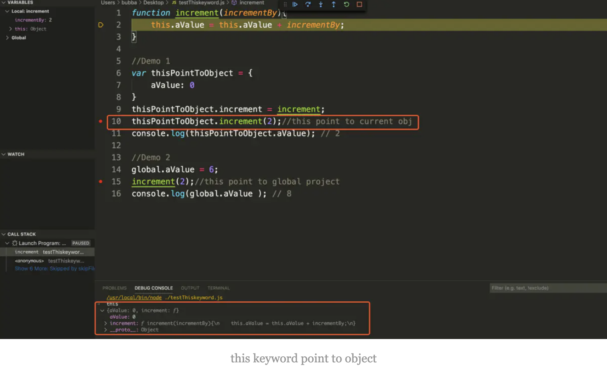
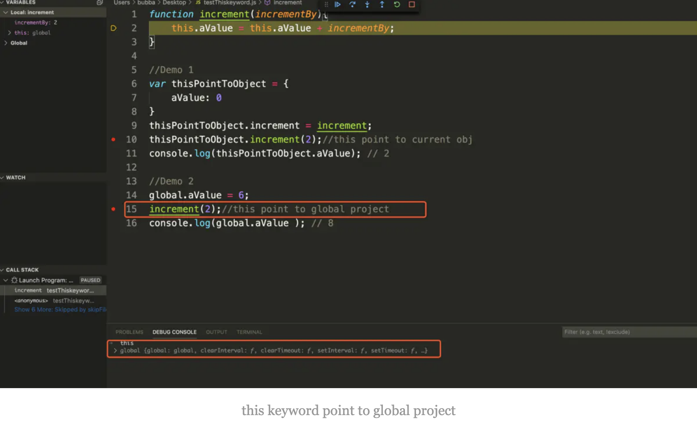

最近工作中接触到JavaScript相关项目，作为一名JS初学者，通过项目与学习获得了JS的一些知识，借着这篇文章，分享一下这段时间了解到的内容。
在开始之前，让我们先思考以下几个问题：
- JavaScript以Java为前缀，两种编程语言之间有什么关联？
- JS能够帮助前端开发者解决什么问题？
- 市场上有各种各样的浏览器，怎么能够保证同一段JS代码在不同浏览器都可以执行成功呢？
- JS能够操作网页内容，开发者是否可以通过恶意JS代码入侵用户电脑？
- 在Java中，需要定义数据类型，而在JS中却不用显式申明变量数据类型，在这背后的原理是什么？
- JS中关键字Class与Java中的Class含义是相同的么？
- 在JS中经常用到的回调函数是什么？作用是什么？
本文分为以下两部分，围绕上面这些问题展开描述；
- 发展背景
- 语言特性（包含基础语法以及JS特性）
发展背景
JavaScript的产生依赖于浏览器的发展，让我们把时间拨回到1993年，第一个世界公认的浏览器在美国NCSA诞生了，名称为Mosaic，当时受到了人们的欢迎；然而1994年的时候，Mosaic的竞争对手Netscape出现了，Netscape开发的浏览器取其名为Mozilla（Mosaic killer的简称），并且为了能够攻破Mosaic的垄断地位，首先提出了通过脚本语言操作网页元素的想法，这样使网页看起来更生动流畅，创新理念及新技术的应用使得Mozilla越来越受欢迎；至于这种脚本语言为什么被命名为JavaScript(以下简称JS)，该名称也是由于Netscape和Sun公司合作后，当时Java是被广大开发者和市场熟知的，为了博得市场的欢迎，名称中引入了Java前缀；在1995年Netscape完成了JavaScript的初版，Netscape是开创者，一石激起千层浪，互联网巨头微软为了能够赢得市场上浏览器的份额，紧随Netscape的脚步，开发了可以在 Internet explorer浏览器运行的脚本语言取名为JScript，再加上CEnvi（Nombas公司发明的） 中的 ScriptEase，至此三个版本的Script互相竞争，长期来看，这三种版本Script的语法规范与运行环境有差异，带来的后果是同一脚本在不同浏览器上表现不一致，开发者需要依赖于浏览器的运行环境定制脚本，广大开发者及浏览器用户难以忍受这种现状，那接下来发生了什么事情呢？
经过了野蛮生长的浏览器脚本语言，Netscape想通过统一JS规范结束上述困境，在欧洲计算机制造商协(ECMA European Computer Manufactures Association)的帮助下，定制了JS脚本语言规范，1997年的时候确立了JavaScript标准，命名为ECMAScript(以下简称ES)，这个标准的作用在于它明确了一种编程语言的特性、语法、类型、功能和 API 等实现标准，那么对于各家浏览器厂商而言，在支持ES规范的基础上，可以选择各自的实现方式，比如Chrome中的V8（JS）、Firefox中的SpiderMonkey(C++/C)以及IE的Chakra(JScript)。对开发者的好处是，统一了平台兼容问题，只需要按照ECMAScript中的标准来实现需求，不需要考虑浏览器间的兼容问题。
在前人的不懈努力下，至此ES统一了JavaScript的标准，2000年之后JS的发展有三个变革点：
- Ajax(Asynchronous JavaScript And XML) - 异步的与服务器交互，动态的修改页面元素；
- Node - 告别了JS只能作用于前端的时代，将JS引入了服务器后端领域；
- ES6 - 2015年ES6的推出，给JS带来了新的特性，更加适合熟悉传统编程语言的开发者，奠定了Morden Java Script的基础。
从wiki上可以看到，二十多年来ECMAScript在不断的完善和成长，现如今，ES6进入了广大开发者的视野，JS成为了近几年最受欢迎的编程语言，在这曲折而又充满惊喜的发展道路上，启发我们的不仅仅是新技术的涌现与实践，更多的是敢于创新的精神值得去学习。
这一节有三点需要说明一下：
- JS设计初衷是为了让页面更生动，可以动态操作网页元素，JS不能够独立发挥作用，需要结合BOM（Browser Object Model）和DOM（Document Object Model）对象，感兴趣的查看一下这三者的关系;
- ES定义了JS的语言规范，随着技术的不断改进，ES的标准也在不断的更新，在这里可以看到最新的规范；
- JS不仅可以运行在浏览器端的JS引擎中，还可以运行在装有Node环境的机器上，在后端服务器中也看到JS的身影。
这张图可以帮助大家更好的了解JS的发展历史：
相信大家对JS发展路径有了初步的认识，接下来聊一下JS这门语言特性。
JavaScript语言特性
首先我们来看一下来自MDN对JS的定义：
JavaScript® (often shortened to JS) is a lightweight, interpreted, object-oriented language with first-class functions, and is best known as the scripting language for Web pages, but it’s used in many non-browser environments as well. It is a prototype-based, multi-paradigm scripting language that is dynamic, and supports object-oriented, imperative, and functional programming styles.
下面我们理解一下这四个关键字：
- 轻量级（lightweight） - 理解为这门脚本为弱类型语言，上手容易，功能强大；
- 解释型（Interpreted） - 作为脚本语言，只需要JS引擎解释运行，没有编译步骤；
- 面向对象（object-oriented language with first-class functions）- 相对于面向过程，具备抽象封装、继承、多态的特征，其中包含头等函数，意味着函数可以作为函数的参数、函数的返回值，可以赋值给变量或存储在数据结构中，包含了函数式编程的思维；
- 基于原型（prototype-based）- 简单可以理解为基于实例的编程，没有Java中类的概念，像Java属于基于类编程，感兴趣的可以参考一下wiki，在MDN有比较两者的区别。
JS可以帮助开发者做哪些事情呢？
其实在浏览器端JS活动范围是有限的，它不能访问CPU、内存等底层系统，所以是一门用户安全的编程语言，不存在有恶意脚本攻击用户电脑的情况。在活动范围内，JS大概可以做下面三类事情：
- 调用DOM接口，修改网页元素，为网页添加丰富的动态功能，为用户提供流畅美观的网页；
- 用户交互，响应用户的行为，比如点击按钮、输入字符串、鼠标移动等事件；
- 处理前端用户请求，与服务器交互，异步请求服务器资源。
到现在为止，以上是关于JS的特性和作用描述，下面通过常用数据类型、事件和函数、异步特性这三方面帮助大家进一步认识JS。
常用数据类型
与大部分编程语言类似，JS支持基本数据类型和引用数据类型，两者的区别在于值是否存在于堆区（heap）,如下图所示：
可以看到JS内存空间分配有两部分组成：
- 栈区（stack） - 有序排列，大小固定
- 堆区（heap） - 无序排列，大小不固定
其中对于基本数据类型，变量地址和值都会放到栈区，比如let num = 1这句申明，变量名num会与栈区分配的地址绑定，并且num的值1也会放到栈区中，这样做的好处也是为了方便存储和提升访问效率，JS为开发者提供了7种基本数据类型：string、number、bigint、 boolean、symbol、null、underfined；
基本数据类型不能满足开发者的所有需要，更多的时候需要操作对象，也就是引用类型，先看一个例子，比如let array=[1,2]，首先我们申明了一个array变量，这个变量与栈区（stack）绑定的地址存放的是一个指针，这个指针是堆区(heap)的地址，具体array的值存在堆区中，意味着引用类型的栈区（stack）存放了指向堆区（heap）的内存地址，引用类型的值存放在堆区空间中，常用的引用类型包含：Object、Function、Array等。
这两种不同的存储方式影响到变量的初始化、赋值和数据传递：
- 数据初始化
JS中初始化数据不需要指定数据类型，比如同样定义一个字符串类型的变量：
1
2
3
4//Java
String s = "Java";
//JS
let s = 'javascript';
原因在于JS是在被解析器执行阶段才能分析确定数据类型，意味着JS是一门弱类型语言，在编写代码定义变量阶段不需要申明类型；
1 | var str = "hello world";//String |
在ES6之前，只需要一个var关键字即可，由于var关键字的作用域是function级别的，不支持block级别(只要代码中一对大括号{}，意味着是一个block)，会导致以下变量污染问题：
1 | var myVar = 1; |
在ES6中除了支持var，还支持以下let、const关键字：
这三者的区别在于作用域和值是否可被修改，let和const都是block级别的，执行上面同样的代码：
1 | let myVar = 1; |
再看一下变量的可修改性，其中var和let是可被多次修改赋值，const申明的是常量，注意如果const申明的是一个引用类型，对象内的属性仍然是可以被修改，比如下面的代码可以正常运行：
1 | const ANIMAL = {name : "cat"}; |
对于基本数据类型，初始化变量在栈区完成；对于引用数据类型，初始化变量需要在栈区和堆区完成。
- 数据赋值
数据初始化完成后，经常会被别的变量引用，比如现在有A、B两个变量，A变量已经完成了初始化，B=A完成了将A赋值给B的过程，问题在于B值的变化会引起A的变化么？搞清楚这个问题有助于编写正确的代码，针对基本数据类型赋值，数据初始化只在栈区完成，简单理解A对B的赋值，其实是内存中会产生A的一个副本，然后和B的变量绑定到一起，结果就是A和B是两个独立的内存地址，两者值的变化互不干扰，来看看下面的例子：
1 | let num1 = 123; |
从测试结果来看，也是符合预期的，尽管将num1赋值给了num2，num2的改变并不会影响num1的值；
引用数据类型的结果和上面是一样的么？接下来我们看一下引用数据类型的变量赋值：
1 | let obj1 = new Object(); |
为什么obj2值的改变也会带动obj1值的变化呢？这是由于当把obj1赋值给obj2的时候，只是在栈空间内复制了一份指向堆空间的地址赋值给obj2，结果obj1和obj2的指针指向的是堆区中同一片区域，所以obj2的变化会改变obj1的值。
- 数据传递
JS中所有函数的参数都是按值传递的，当把函数外部的值赋给函数内部参数时，类似于上面提到的值从一个变量赋值给另一个变量，意味着如果是基本数据类型，则会复制一份栈空间内的数据给函数内部用，两者隔离互不影响；如果是引用类型，则会复制一份栈空间内的堆空间地址给函数内部用，函数内部值的变化会影响函数外值的变化，从下面的测试结果来看也是符合这个结论的：
1 | //基本数据传递 |
上述是从内存分配角度介绍了JS中的数据类型，核心在于基本数据类型和引用数据类型的存储方式不同会影响变量的操作，针对JS中常见数据类型的语法可以参考官方文档，接下来有必要聊一下JS中的Object对象；
Object
对象是JS中重要的概念，上一节已经提到Object是引用数据类型，相比较于其他基本数据类型（仅存储单一的值比如字符串、数字等），Object可以用来存储和操作复杂的数据，通过下面的语句先来创建一个对象：
1 | //Method 1 "object literal" syntax 支持一次创建一个对象 |
user可以理解为一个存储在栈区的指针，对应的值存储在堆区，值是包含多个属性的集合，每一个属性包含属性名称（key）和属性值(Value)，对于存储在堆区的数值可以理解为多组键值对（key-value pairs），其中key可以必须为字符串或者symbols，value可以是任意类型，接着给user添加一些属性：
1 | let user = { // an object |
我们可以通过objectname.propertyname或者objectname[“propertyname”]访问属性值，而且可以操作（增加、删除）对象属性，比如delete user.name将删除user中的name属性。
JS中Array、Date、Map、Function等类型都是Object，通过instanceof可以判断对象是否属于某个class:
1 | //Array |
之前我们提到JS是基于原型的，为什么这里出现Map、Set等Class?
通过下面的例子来了解一下Class关键字:
1 | //Custom Class |
其中的constructor方法会被new关键字调用，通过上面的输出可以看到Animal的类型是function，其实当我们通过class申明时，以下两点需要了解：
- 通过Class申明的Animal，内部其实是以function申明的方式实现（typeof Animal == function），contructor中的代码逻辑就是function的方法体：
1 | // Define the Animal by function keyword |
- Class中的方法，其实就是Animal.prototype.method，意味着通过class关键字申明类与function申明的类，本质是没有区别的。
使用Class关键字有什么好处呢？
- JS提供的语法糖，更符合传统后端开发者的习惯；
- 方便多级原型继承；
通过Class申明的类，内部的变量属性和方法会自动绑定到原型中，可以轻松实现多级继承，提升开发效率，下面定义了一个Cat继承Animal的类：
1 | class Animal { |
This关键字
this在JS中扮演着什么角色？发挥着什么作用？
this是一个对象的指针，这个地址的值由JS运行时决定的，取决于方法的调用者，下面的例子可以看到this会指向user，也会指向admin:
1 | let user = { name: "John" }; |
变量的定义申明决定了变量的可见范围，其中在变量的可见范围内，通过this可以访问到；this可能指向两个地址，首先会指向当前调用者的container object，如果没有显式的申明调用者，则会指向global project。
其中在浏览器端，global context指的是window object，this指的是window对象；在Node中，this会指向globalThis(global object)，
1 | function increment(incrementBy){ |


Events & Function
前面介绍了JS的数据类型包含基本数据类型和引用数据类型，再结合程序设计语言的三大基本结构（顺序结构、选择分支结构、循环结构），我们就可以编写复杂的业务程序，在此之前，有必要了解一下JS中的事件和函数，这两者是在浏览器端是相互依存，浏览器端事件的触发引起函数的调用，才能真正发挥JS的作用，下面三点是需要了解的：
JS中的事件是由浏览器通知的
网页上按钮的点击、输入框的变化、光标的移动，都是由DOM组件发出的事件，这些事件会传递给JS引擎，调用对应的方法；函数（Function）也是一个对象
正如之前提到的，function是JS中的头等函数，它们可以像基本数据类型一样进行赋值、作为函数参数以及作为函数返回参数。
2.1. 方法申明
1 | // Function Declaration |
2.2. 方法调用
1 | // invoke function |
- 函数（Function）作为事件处理器
3.1. 绑定HTML元素
在HTML中，指定事件调用的JS方法，如下面例子所示：
1 | <html> |
3.2. 调用DOM API
相比较于直接将JS方法绑定到HTML元素中，现在比较流行的方式是直接调用DOM对象的API，可以提升页面响应速度，提升用户体验，还是上面的例子，我们做出以下改变：
1 | <html> |
异步特性
当我们访问网站的时候，如果页面总是卡顿，总会降低用户访问网站的兴致，前端页面会包含很多JS脚本；JS是单线程的一门语言，意味着一个时间点只能处理一件事情，比如现在页面上一个按钮绑定了后台服务器方法，如果用户点击按钮后，需要等待服务器处理结果才能进行其他操作，这样的网站用户体验十分糟糕，针对这种情况，需要保证页面不会发生阻塞，现在有必要引入异步编程，咱们简单看一下JS是怎么处理的？
通过下面的例子来回顾一下JSRunning引擎的运行:
- 一般情况下，JS引擎会依次顺序执行代码片段；
- 如果出现会导致浏览器阻塞的操作，比如请求后台服务器、获取数据库数据等耗时动作，JS引擎不会马上执行，而是将任务添加到Web API中，待异步操作完成后，将回调方法放入Callback Queue中；
- 尽管Callback Queue中有任务，JS引擎也不会立刻执行，只有当Stack中任务为空时，Event Loop会执行任务队列中的回调方法。
下面这段简短的JS是怎么执行的呢？
1 | setTimeout(function(){ |
- JS引擎识别到setTimeout为异步方法，会将该任务放到WebAPI中，如下图所示：
- 在Web APIs执行异步任务的过程中，并不会阻碍JS引擎执行接下来的代码，可以看到Stack中加载了console.log(“This comes second”)的任务，并将其打印在控制台中；
- 让我们继续等待异步执行完成
当异步任务完成后，我们可以看到这个异步操作放入了Callback Queue中，接下来等待Event Loop将该操作放入Stack中，如下图所示：
当Stack、Web APIs、Callback Queue都为空时，这个时候我们可以认为JS引擎完成了上述代码的执行，注意当前我们将timer时间设置为5秒，即使设置为0秒，JS引擎也会将该操作放入到Web APIs中，输出结果也是一样的。
了解JS实现异步的基本原理后，我们可以看到JS中常见的回调函数（异步回调）其实是在Web APIs执行完异步任务后，Event Loop会将回调函数放入到Stack中执行，在代码编写中，当遇到异步编程时，这个模型更有助于理解JS的执行过程和书写更有效的代码。
总结
现如今，JS的发展速度越来越迅猛，在前后端领域都扮演了重要的角色，在我个人看来，有必要重新审视这门编程语言；感谢您的阅读，文中如有不足的地方，请大家更正，希望文中内容给您带来思考的同时，可以将其思考内容分享给大家。
最后也向您提一个问题：JS是一门弱类型语言，意味着申明变量时不需要指定特定数据类型，在解释执行阶段，JS解析器仍会在内存中分析得出具体数据类型；对于一些强类型语言（Java），需要在编写代码阶段明确对应数据类型，那么编程中数据类型的明确有什么意义呢？
常用工具：
参考资料：
MDN:
https://developer.mozilla.org/en-US/docs/Web
Javascript Info:
https://javascript.info/
Salesforce Modules:
https://trailhead.salesforce.com/en/content/learn/trails/learn-to-work-with-javascript
ES6 Features:
https://262.ecma-international.org/6.0/
ES6 Compatibility table:
http://kangax.github.io/compat-table/es6/
If you like this blog or find it useful for you, you are welcome to comment on it. You are also welcome to share this blog, so that more people can participate in it. If the images used in the blog infringe your copyright, please contact the author to delete them. Thank you !